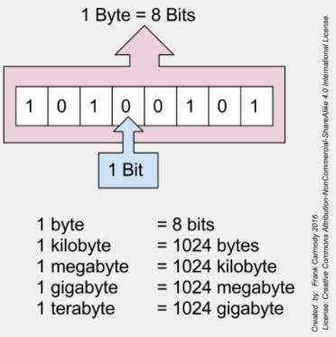
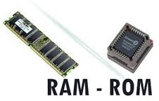
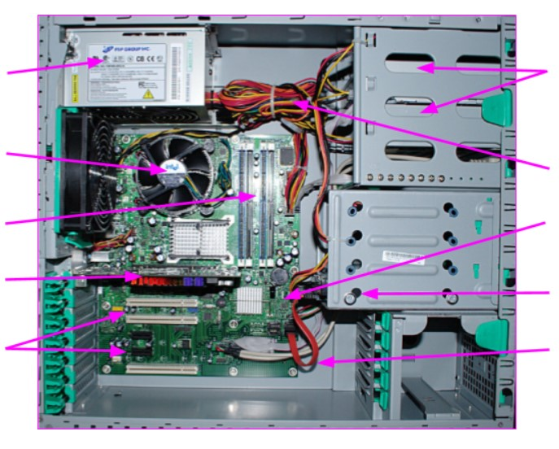

Unit 1: Understanding Computers
Activity 1: Hardware
Code.org: How Computers Work Video series
 |
The following videos from code.org provide an overview of how computers work. We will watch a few videos from this series at the start of each activity.
|
|---|
Computer Components
Your Computer's Hardware
While programmers do not deal directly with the hardware it is important to know a bit about your your computer's hardware.
Hardware is any part of your computer that you can physically touch.
Although computer hardware varies greatly from machine to machine, all computers will have hardware that falls into the following four categories:
- Input devices: Any device that allows raw data to be entered into the computer system.
- System Unit: The system unit takes raw data from the input devices, processes the data into useful information and then sends it to the output devices. A metal enclosure or “case” contains the internal components of the computer.
- Storage Units: Sometimes known as "secondary" or "auxiliary" storage. This is where information can be stored so that it can be retrieved at a later date.
- Output devices: Any device that takes processed data and displays it in a meaningful way.
Input and output devices can also be referred to as peripheral or external devices.
|
Click HERE to work through a game on Computer Components to learn more about the components of a computer. If you are using a standalone player, click here for the swf file. A standalone player is available from these links: Windows, MacOS, Linux |
|---|
|
Watch the following video on the parts that are inside a computer: |
|---|
Measuring memory and storage
|
Computer storage and memory is often measured in megabytes (MB), gigabytes (GB), and more recently, terabytes (TB). Currently, most new computers come with 4GB or 8GB of RAM, while hard drive storage can be as much as 1TB. Many new computers are also being manufactured with SSD (solid state drives), which are much faster than the previous magnetic drives. |
Measuring computer memory |
|---|
 |
A kilobyte (KB) is 1,024 bytes, not one thousand bytes! This is because computers use binary (base two) math, instead of a decimal (base ten) system. 1024 = 2^10. |
|---|
|
RAM vs ROM |
Memory (RAM & ROM) is the place that the computer stores information while it is in operation. Working memory is used to store the computer instructions (programs and bios data) and to hold the data that is to be processed and the result.
|
|---|

Storage units (Hard drives, Optical drives, etc) are not accessed directly by the CPU, and are used to keep information between operating sessions (between times when the computer is on and off).
|
Watch the following video for a basic understanding of memory and its role in the computer. |
|---|
Clock Speeds
When purchasing a computer, the clock speed of the CPU is another important consideration. Clock speed refers to how fast a processor can process information, make calculations, or perform operations. More specifically, it is the number of times, in a second, the processor can turn a signal on and off again.
Take a look at some sample clock speeds in the table below:
| Clock Speed | Common Abbreviation | Number of times signal is turned on and off |
| 3 hertz | 3 Hz | 3 times per second |
| 6 megahertz | 6 MHz | 6 million times per second |
| 800 megahertz | 800 MHz | 800 million times per second |
| 1 gigahertz | 1 GHz | 1 billion cycles per second |
| 2.5 gigahertz | 2.5 GHz | 2.5 billion cycles per second |
 |
Optional: Want more in-depth knowledge? The BIOS uses ROM memory in the form of PROM, EPROM or EEPROM for the basic input and output (BIOS) instructions of the computer. The expensive, but powerful static RAM is used to hold items in the CPU or the computer cache so that the processor has ready access to the instructions and/or data that it is currently using. The various form of dynamic RAM that is used as working memory of the computer has come in a variety of forms, from SDRAM, to DDR SDRAM, to DDR2 and DDR3 found in modern computers. The following video provides a more detailed description of the types of memory used in the computer system and how they are used. In particular the video looks at the BIOS stored in PROMS, EPROMS, and EEPROMS, the use of SRAM for caches on CPUs, and the use SDRAMS, DDR, DDR2, and DDR3 for DRAM. |
|---|
Evidence of Learning
 Computer Hardware: Scavenger Hunt!
Computer Hardware: Scavenger Hunt!
Once you have read the lesson and watched the videos above, complete the following using the Activity 1 Evidence Card in Hapara:
- Search the Internet for an image and a description of each computer component. Classify each as an Input Device, System Unit, Storage Unit or Output device. Share your findings using the evidence card in Hapara.
- CPU
- HDD
- RAM
- SSD
- Keyboard
- Monitor
- Motherboard
- Mouse
- Power Supply
- Printer
- Ports allow us to connect peripheral devices. Below is a brief list of some common ports. Search the Internet for an image and a description of each port (find an image of the port, not the connector!) Share your findings using the evidence card in Hapara.
- Ethernet
- USB 3.0
- USB-C
- VGA
- HDMI
- What are the names of the computer parts shown below? Show your understanding using the evidence card in Hapara. 
Click Submit on the Activity 1 Evidence Card when you are done this task.